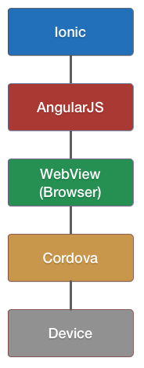
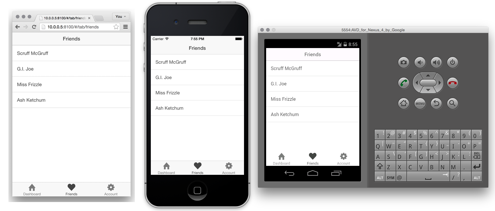

The beautiful, open source framework for developing hybrid mobile apps.
Jeremy Wilken @gnomeontherun
Powered By JavaScript - September 17, 2014
“So you want to build a mobile app?”
Imagine your client is a resort.
They want an app.
You want
- Native quality
- Build once, deploy cross platform
- Write only JavaScript, HTML, CSS
- UI components
- Fast turnaround
- Familiar tools
You want an Ionic hybrid app
“Ionic is the open source HTML5 Mobile Framework for building amazing, cross-platform hybrid native apps with HTML, JavaScript, and CSS.”
Quoted directly from the Ionic GitHub README.
Ionic hybrid app structure
A web application loads inside a native app wrapper.
You focus on the web application,
let Cordova manage the native app.
Cordova facilitiates the WebView and native app communication
Cordova acts like the proxy between your application and the device.
AngularJS is the web application foundation
Angular is primarily used to manage data and business logic.
Ionic provides the UI components
Ionic provides much of the interface for your app.
“Howdy”
Use web technologies you already know and love


Forget having to learn native platforms
User interface components
CSS Components
- CSS components for unique mobile controls
- Large catalog of css classes
JavaScript components
- JavaScript components with functionality built in
- Angular directives, used as like HTML tags
- Angular services, JavaScript objects with methods
Think of it as the missing mobile SDK for the web.
Built to work with AngularJS
- Powerful web application framework
- UI Components are AngularJS Directives
- AngularJS Services to control programmatically
- Can use existing AngularJS third party modules
Don't know AngularJS? Perfect chance to get introduced.
Beautifully designed
- Looks and feels like native interfaces
- Cohesive visual system adapts to match platform
- Clean and simple
- Easy to customize
You'll only need to design the custom content.
Performance obsessed
- Hardware accelerated animations
- Minimal DOM Manipulation
- Zero jQuery (you could still include it if you want)
Performance that can match quality of native apps.
Native focused and inspired
- Built to work with Cordova/Phonegap
- Hook into device APIs, like camera or GPS
- Modeled off of native SDKs
Access all the native features without the overhead.
$ npm install -g ionic
_ _
(_) (_)
_ ___ _ __ _ ___
| |/ _ \| '_ \| |/ __|
| | (_) | | | | | (__
|_|\___/|_| |_|_|\___| CLI
- Quickly start a project with starter templates
- Preconfigured tools: Gulp, Sass, Bower, etc.
- Start a local dev server with LiveReload
- Update Ionic Framework library files
- Build and run native apps
One tool for nearly all tasks.
If you weren't already sold...
- Open Source Framework
- Customizable CSS generated by Sass
- Over 600 MIT licensed font-icons included
- MIT Licensed
- A dedicated, community-driven spirit
- A top open source project on Github
Showcase: http://showcase.ionicframework.com/
“Ok. Ionic sounds pretty neat.
How do you make a app with Ionic?”
1. Install Ionic
$ npm install -g cordova ionicIonic and Cordova are built using NodeJS.
2. Start a project
$ ionic start my-awesome-appCreates a new starter project ready to edit and build.
3. Write web application
Its just HTML, CSS, and JavaScript.
Choose your own editor.
4. Preview your app
In browser, emulator, or device.
5. Deploy to multiple platforms


Follow the platform process to upload to the platform store.
Ok, so how did you make that demo?
Let's look at the demo a little closer.
Demo Stats
- Lines of HTML: 375
- Lines of CSS: 26
- Lines of JavaScript: 275


Lists

Complex Lists
- AngularJS Directive
- Buttons exposed by swiping
- Reorder
- Delete

{{ item.name }}
{{ item.quote }}
Edit
Delete
Collection Repeat
- Similar to Angular's
ng-repeat - Scroll through thousands of items
- Only renders the viewable items
- Smooth jank-free scrolling
- Low memory footprint
{{ c.name }}
{{ c.email }}
Tabs
- Nested views
- Each tab has its own nav history

Slide Box
Slide 1
Slide 2
Slide 3

Action Sheet
$ionicActionSheet.show({
titleText: 'Modify your album',
buttons: [
{ text: 'Share' },
{ text: 'Move' },
],
destructiveText: 'Delete',
cancelText: 'Cancel',
buttonClicked: function(index) {
console.log('BUTTON CLICKED', index);
return true;
}
});
Pull to Refresh

Navigation
- Shows back button when possible
- Each tab has its own history stack
- Works with Android's back button
Back
What's coming up?
- Ionic Creator: Visually design apps
- Ionic Build service
- Support for FirefoxOS and Windows 8
- Version 1.0 stable
- and more!
Get Started with Ionic!
Documentation, tutorials, forum and more
ionicframework.com
Contribute on GitHub
github.com/driftyco/ionic